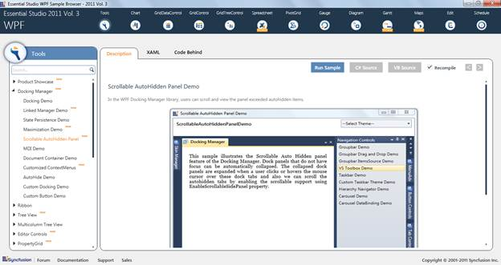

This feature allows you to scroll and view the AutoHidden items without resizing the header of the tabs.
Use Case Scenario
This feature helps the user to have a clear view of the AutoHidden items header without having to search or mouse over on each tab when the panel is resized to a smaller size.
Figure 371: Excel-like Scrollable View
Samples Link
To view samples:
1. Click Start-->All Programs-->Syncfusion-->Essential Studio <version number> -->Dashboard. (Refer section 2.2)
2. In the Dashboard window, click Run Locally Installed Samples for WPF under User Interface Edition panel.

Figure 372: Sample Browser
The WPF Sample Browser window is displayed.
 Properties, Methods and Events tables
Properties, Methods and Events tables